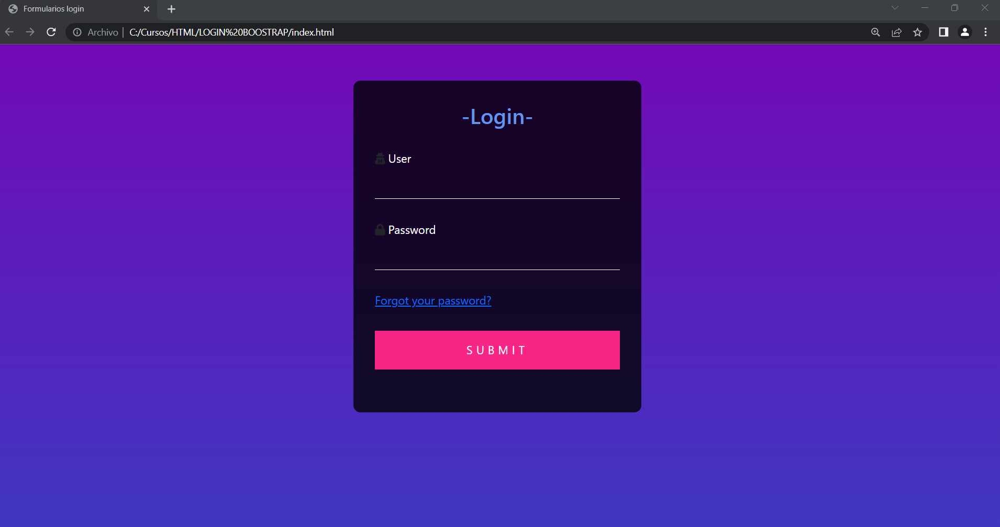
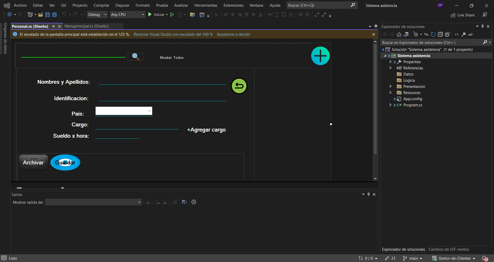
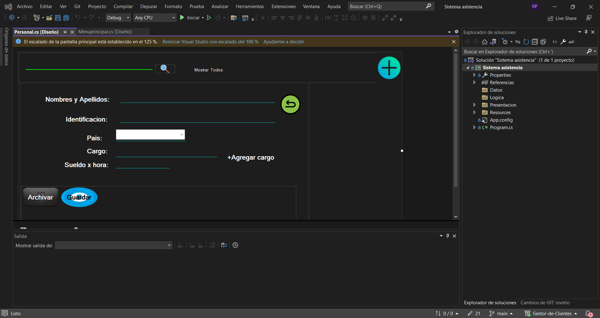

Proyectos
-
Login
Login utilizando HTML, CSS, JavaScript y Bootstrap. Este es un proyecto de inicio de sesión que desarrollé utilizando tecnologías web comunes. Proporciona un formulario de inicio de sesión simple con validación de usuario y contraseña. Los usuarios deben ingresar un nombre de usuario y una contraseña válidos para acceder. El formulario utiliza estilos CSS personalizados y también incluye iconos de usuario y contraseña para una mejor experiencia visual. El código JavaScript maneja la validación del formulario y evita el envío predeterminado. Siéntete libre de explorar el código y utilizarlo como punto de partida para tu propio proyecto de autenticación. ¡Estoy abierto a contribuciones y mejoras para hacerlo aún más robusto y seguro!
Link del repositorio -
Página de Documentación Java

Esta página web es una documentación sobre el lenguaje de programación Java. Está estructurada en HTML y CSS, con una barra de navegación que permite acceder rápidamente a diferentes secciones. Contiene información sobre cómo comenzar con Java, el punto de entrada en un programa, cómo imprimir por consola, la declaración de funciones (métodos) y los conceptos básicos de la programación orientada a objetos. El contenido se presenta de manera clara y ordenada, utilizando ejemplos de código y explicaciones concisas.
Link del repositorio -
Sistema de Asistencia C#
 

El proyecto de gestión de clientes con 3 capas de datos, lógica y presentación ha sido desarrollado con el objetivo de facilitar y optimizar la gestión de clientes en una organización. Esta solución se basa en una arquitectura escalable y modular, que permite una mayor flexibilidad y capacidad de adaptación a medida que crecen las necesidades del negocio.
Link del repositorio